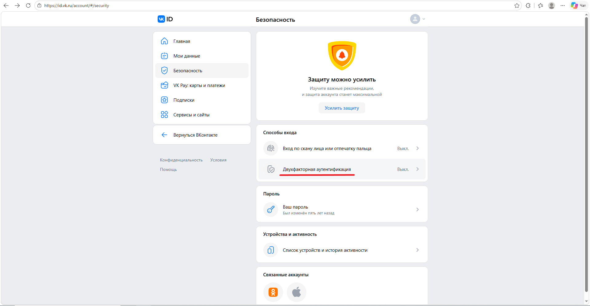
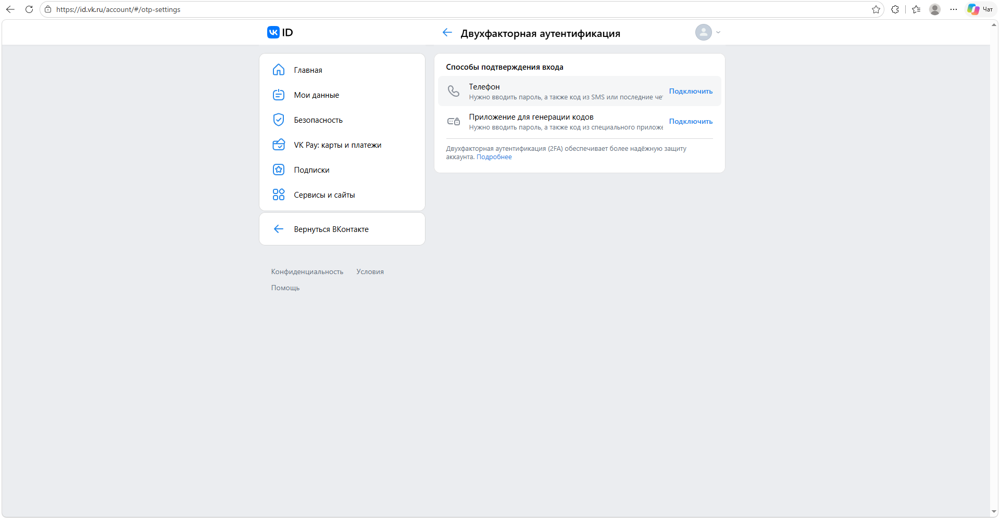
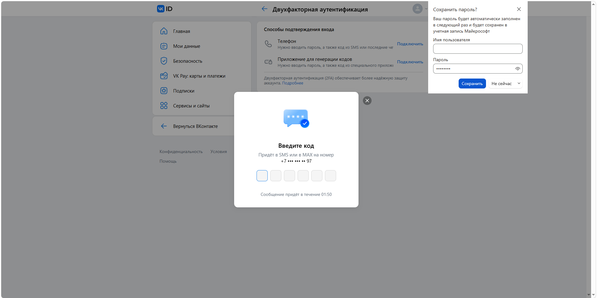

Путеводитель по безопасности и пользованию сети Интернет
Для защиты аккаунта от взлома и кражи сохраненных в ВК данных рекомендуется подключить двухфакторную аутентификацию. Она не позволит мошенникам легко зайти в чужой аккаунт даже при наличие пароля, пусть это для пользователя и добавит несколько секунд мороки при входе в свой аккаунт. Но это того стоит.
На ПК
Подключение двухфакторной аутентификации
Сперва необходимо войти в необходимую вкладку в приложении, а конкретно нажать на свой профиль в верхней правой части страницы и выбрать пункт "Настройки".

Затем нужно перейти во вкладку "Безопасность" справа.

Уже здесь остается перейти во вкладку "Двухфакторная Аутентификация", и в открывшемся меню из двух способов подтверждения выбрать "Телефон".


Выходить из всех устройств, о чем скажет появившееся окно, необхятально, и можно отключить эту функцию. После ввода пароля от аккаунта, на СМС номера, на который зарегистрирован профиль в ВК, придет код подтверждения, который останется ввести.

На этом оформление двухфакторной аутентификации заканчивается. Напоследок, можно переписать в удобное место список кодов для быстрого входа, который появился после ввода кода. Теперь можно считать свой профиль ВК гораздо более защищенным, но при входе в него помимо необходимых почты и пароля, нужно будет вводить код, приходящий на СМС.